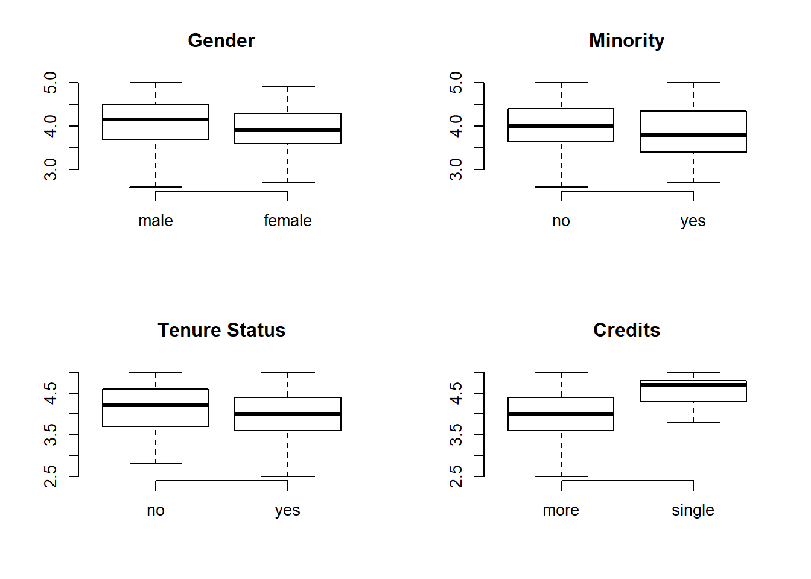

Dataset Examples
1 Package AES
Applied Econometrics with R
Functions, data sets, examples, demos, and vignettes for the book Christian Kleiber and Achim Zeileis (2008), Applied Econometrics with R, Springer-Verlag, New York.
install.packages( "AER" )
library( AER )
vignette( "AER" )1.1 California Schools Data
The data used here are from all 420 K-6 and K-8 districts in California with data available for 1998 and 1999.
The dataset is used to address the question of whether
Test scores are on the Stanford 9 standardized test administered to 5th grade students. School characteristics (averaged across the district) include enrollment, number of teachers (measured as “full-time equivalents”, number of computers per classroom, and expenditures per student. Demographic variables for the students are averaged across the district. The demographic variables include the percentage of students in the public assistance program CalWorks (formerly AFDC), the percentage of students that qualify for a reduced price lunch, and the percentage of students that are English learners (that is, students for whom English is a second language).
Data Dictionary
- district: District code (character)
- stratio: Student-teacher ratio (calculated below)
- score: Average of two primary scores, math and reading
- school: School name (character)
- county: indicating county (factor)
- grades: indicating grade span of district (factor)
- students: Total enrollment
- teachers: Number of teachers
- calworks: Percent qualifying for CalWorks (income assistance)
- lunch: Percent qualifying for reduced-price lunch
- computer: Number of computers
- expenditure: Expenditure per student
- income: District average income (in USD 1,000)
- english: Percent of English learners
- read: Average reading score
- math: Average math score
1.1.1 Specification
What happens to the significance of the student-teacher ratio variable once appropriate controls are added to the model?
data( "CASchools" )
## variable transformations
CASchools$stratio <- with(CASchools, students/teachers)
CASchools$score <- with(CASchools, (math + read)/2)
dat <- dplyr::select( CASchools, score, stratio, expenditure, english, lunch, calworks )
pairs( dat, lower.panel=panel.smooth, upper.panel=panel.cor)## Stock and Watson (2007)
## p. 152
fm1 <- lm( score ~ stratio, data = CASchools )
# coeftest(fm1, vcov = sandwich)
## p. 159
fm2 <- lm( score ~ I(stratio < 20), data = CASchools )
## p. 199
fm3 <- lm( score ~ stratio + english, data = CASchools )
## p. 224
fm4 <- lm( score ~ stratio + expenditure + english, data = CASchools )
stargazer( fm1, fm2, fm3, fm4, type="html",
omit.stat = c("rsq", "f", "ser"),
digits=2)| Dependent variable: | ||||
| score | ||||
| (1) | (2) | (3) | (4) | |
| stratio | -2.28*** | -1.10*** | -0.29 | |
| (0.48) | (0.38) | (0.48) | ||
| I(stratio < 20) | 7.17*** | |||
| (1.85) | ||||
| expenditure | 0.004*** | |||
| (0.001) | ||||
| english | -0.65*** | -0.66*** | ||
| (0.04) | (0.04) | |||
| Constant | 698.93*** | 650.08*** | 686.03*** | 649.58*** |
| (9.47) | (1.39) | (7.41) | (15.21) | |
| Observations | 420 | 420 | 420 | 420 |
| Adjusted R2 | 0.05 | 0.03 | 0.42 | 0.43 |
| Note: | p<0.1; p<0.05; p<0.01 | |||
1.1.2 Additional Controls
Control for non-native speakers and income level of students.
## Table 7.1, p. 242 (numbers refer to columns)
fmc3 <- lm( score ~ stratio + english + lunch, data = CASchools )
fmc4 <- lm( score ~ stratio + english + calworks, data = CASchools )
fmc5 <- lm( score ~ stratio + english + lunch + calworks, data = CASchools )stargazer( fmc3, fmc4, fmc5, type="html",
omit.stat = c("rsq", "f", "ser"),
digits=2 )| Dependent variable: | |||
| score | |||
| (1) | (2) | (3) | |
| stratio | -1.00*** | -1.31*** | -1.01*** |
| (0.24) | (0.31) | (0.24) | |
| english | -0.12*** | -0.49*** | -0.13*** |
| (0.03) | (0.03) | (0.03) | |
| lunch | -0.55*** | -0.53*** | |
| (0.02) | (0.03) | ||
| calworks | -0.79*** | -0.05 | |
| (0.05) | (0.06) | ||
| Constant | 700.15*** | 698.00*** | 700.39*** |
| (4.69) | (6.02) | (4.70) | |
| Observations | 420 | 420 | 420 |
| Adjusted R2 | 0.77 | 0.63 | 0.77 |
| Note: | p<0.1; p<0.05; p<0.01 | ||
1.2 Teacher Ratings
data("TeachingRatings")
TeachingRatings$response.rate <- TeachingRatings$students / TeachingRatings$allstudents
TeachingRatings %>% head() %>% pander()| minority | age | gender | credits | beauty | eval | division | native |
|---|---|---|---|---|---|---|---|
| yes | 36 | female | more | 0.2899 | 4.3 | upper | yes |
| no | 59 | male | more | -0.7377 | 4.5 | upper | yes |
| no | 51 | male | more | -0.572 | 3.7 | upper | yes |
| no | 40 | female | more | -0.678 | 4.3 | upper | yes |
| no | 31 | female | more | 1.51 | 4.4 | upper | yes |
| no | 62 | male | more | 0.5886 | 4.2 | upper | yes |
| tenure | students | allstudents | prof | response.rate |
|---|---|---|---|---|
| yes | 24 | 43 | 1 | 0.5581 |
| yes | 17 | 20 | 2 | 0.85 |
| yes | 55 | 55 | 3 | 1 |
| yes | 40 | 46 | 4 | 0.8696 |
| yes | 42 | 48 | 5 | 0.875 |
| yes | 182 | 282 | 6 | 0.6454 |
dat <- dplyr::select( TeachingRatings, eval, age, beauty, response.rate )
pairs( dat, lower.panel=panel.smooth, upper.panel=panel.cor)- Are beautiful people better teachers?
- What is the relationship between age and response rate?
- Are people content with a course more or less likely to submit evaluations?
par( mfrow=c(2,2) )
plot( TeachingRatings$gender, TeachingRatings$eval, frame.plot=F, outline=F, main="Gender" )
plot( TeachingRatings$minority, TeachingRatings$eval, frame.plot=F, outline=F, main="Minority" )
plot( TeachingRatings$tenure, TeachingRatings$eval, frame.plot=F, outline=F, main="Tenure Status" )
plot( TeachingRatings$credits, TeachingRatings$eval, frame.plot=F, outline=F, main="Credits" )
group.structure <- formula( TeachingRatings$eval ~ TeachingRatings$minority * TeachingRatings$gender )
boxplot( group.structure, ylim=c(3,5),
las=0, frame.plot=F, outline=F,
main="Performance by Gender & Minority Status",
col=c("steelblue4","steelblue3","firebrick4","firebrick3"),
staplewex=0, whisklty=0, border="gray90", lwd=2 )
abline( h=seq(3,5,0.25), col="gray", lty=3, lwd=0.25 )group.structure <- formula( TeachingRatings$eval ~ TeachingRatings$gender * TeachingRatings$tenure )
boxplot( group.structure, ylim=c(3,5),
las=0, frame.plot=F, outline=F,
main="Performance by Gender and Tenure Status of the Professor",
col=c("steelblue","firebrick","steelblue","firebrick" ),
staplewex=0, whisklty=0, border="gray90", lwd=2 )
abline( h=seq(3,5,0.25), col="gray", lty=3, lwd=0.25 )## evaluation score vs. beauty
jplot( TeachingRatings$beauty, TeachingRatings$eval, xlab="Beauty", ylab="Student Evaluations" )
fm <- lm(eval ~ beauty, data = TeachingRatings)
abline(fm)
summary(fm)##
## Call:
## lm(formula = eval ~ beauty, data = TeachingRatings)
##
## Residuals:
## Min 1Q Median 3Q Max
## -1.80015 -0.36304 0.07254 0.40207 1.10373
##
## Coefficients:
## Estimate Std. Error t value Pr(>|t|)
## (Intercept) 3.99827 0.02535 157.727 < 2e-16 ***
## beauty 0.13300 0.03218 4.133 4.25e-05 ***
## ---
## Signif. codes: 0 '***' 0.001 '**' 0.01 '*' 0.05 '.' 0.1 ' ' 1
##
## Residual standard error: 0.5455 on 461 degrees of freedom
## Multiple R-squared: 0.03574, Adjusted R-squared: 0.03364
## F-statistic: 17.08 on 1 and 461 DF, p-value: 4.247e-05## prediction of Stock & Watson's evaluation score
sw <- with(TeachingRatings, mean(beauty) + c(0, 1) * sd(beauty))
names(sw) <- c("Watson", "Stock")
predict(fm, newdata = data.frame(beauty = sw))## Watson Stock
## 3.998272 4.103163## Hamermesh and Parker, 2005, Table 3
fmw <- lm(eval ~ beauty + gender + minority + native + tenure + division + credits,
weights = students, data = TeachingRatings)
coeftest(fmw, vcov = sandwich)##
## t test of coefficients:
##
## Estimate Std. Error t value Pr(>|t|)
## (Intercept) 4.223142 0.063947 66.0417 < 2.2e-16 ***
## beauty 0.274805 0.034761 7.9056 2.033e-14 ***
## genderfemale -0.238993 0.056402 -4.2373 2.740e-05 ***
## minorityyes -0.248937 0.089177 -2.7915 0.005467 **
## nativeno -0.252713 0.098061 -2.5771 0.010277 *
## tenureyes -0.135923 0.060122 -2.2608 0.024245 *
## divisionlower -0.045895 0.059307 -0.7739 0.439421
## creditssingle 0.686507 0.114675 5.9866 4.351e-09 ***
## ---
## Signif. codes: 0 '***' 0.001 '**' 0.01 '*' 0.05 '.' 0.1 ' ' 1## (same coefficients but with different covariances)stargazer( fmc3, fmc4, fmc5, type="html",
omit.stat = c("rsq", "f", "ser"),
digits=2 )| Dependent variable: | |||
| score | |||
| (1) | (2) | (3) | |
| stratio | -1.00*** | -1.31*** | -1.01*** |
| (0.24) | (0.31) | (0.24) | |
| english | -0.12*** | -0.49*** | -0.13*** |
| (0.03) | (0.03) | (0.03) | |
| lunch | -0.55*** | -0.53*** | |
| (0.02) | (0.03) | ||
| calworks | -0.79*** | -0.05 | |
| (0.05) | (0.06) | ||
| Constant | 700.15*** | 698.00*** | 700.39*** |
| (4.69) | (6.02) | (4.70) | |
| Observations | 420 | 420 | 420 |
| Adjusted R2 | 0.77 | 0.63 | 0.77 |
| Note: | p<0.1; p<0.05; p<0.01 | ||
2 Package ‘woolridge’
Read directly from the website:
library( foreign )
dat <- read.dta( "http://fmwww.bc.edu/ec-p/data/wooldridge/meap01.dta" )
dat <- read.dta( "http://fmwww.bc.edu/ec-p/data/wooldridge/affairs.dta" )R package:
install.packages( "wooldridge" )
library( wooldridge )2.1 Affairs Dataset
data( "affairs" )
head( affairs ) %>% pander()| id | male | age | yrsmarr | kids | relig | educ | occup | ratemarr | naffairs |
|---|---|---|---|---|---|---|---|---|---|
| 4 | 1 | 37 | 10 | 0 | 3 | 18 | 7 | 4 | 0 |
| 5 | 0 | 27 | 4 | 0 | 4 | 14 | 6 | 4 | 0 |
| 6 | 1 | 27 | 1.5 | 0 | 3 | 18 | 4 | 4 | 3 |
| 11 | 0 | 32 | 15 | 1 | 1 | 12 | 1 | 4 | 0 |
| 12 | 0 | 27 | 4 | 1 | 3 | 17 | 1 | 5 | 3 |
| 16 | 1 | 57 | 15 | 1 | 5 | 18 | 6 | 5 | 0 |
| affair | vryhap | hapavg | avgmarr | unhap | vryrel | smerel | slghtrel | notrel |
|---|---|---|---|---|---|---|---|---|
| 0 | 0 | 1 | 0 | 0 | 0 | 0 | 1 | 0 |
| 0 | 0 | 1 | 0 | 0 | 0 | 1 | 0 | 0 |
| 1 | 0 | 1 | 0 | 0 | 0 | 0 | 1 | 0 |
| 0 | 0 | 1 | 0 | 0 | 0 | 0 | 0 | 0 |
| 1 | 1 | 0 | 0 | 0 | 0 | 0 | 1 | 0 |
| 0 | 1 | 0 | 0 | 0 | 1 | 0 | 0 | 0 |
- id: identifier
- male: =1 if male
- age: in years
- yrsmarr: years married
- kids: =1 if have kids
- relig: 5 = very relig., 4 = somewhat, 3 = slightly, 2 = not at all, 1 = anti
- educ: years schooling
- occup: occupation, reverse Hollingshead scale
- ratemarr: 5 = vry hap marr, 4 = hap than avg, 3 = avg, 2 = smewht unhap, 1 = vry unhap
- naffairs: number of affairs within last year
- affair: =1 if had at least one affair
- vryhap: ratemarr == 5
- hapavg: ratemarr == 4
- avgmarr: ratemarr == 3
- unhap: ratemarr == 2
- vryrel: relig == 5
- smerel: relig == 4
- slghtrel: relig == 3
- notrel: relig == 2
2.1.1 Models
Insert model exammples here…
2.2 School Voucher Dataset
data( 'voucher' )
head( voucher ) %>% pander()| studyid | black | hispanic | female | appyear | mnce | select | choice |
|---|---|---|---|---|---|---|---|
| 21 | 1 | 0 | 1 | 90 | 44 | 1 | 0 |
| 26 | 1 | 0 | 0 | 90 | 46 | 1 | 1 |
| 30 | 1 | 0 | 0 | 90 | 20 | 1 | 1 |
| 31 | 1 | 0 | 1 | 90 | 36 | 1 | 1 |
| 33 | 1 | 0 | 0 | 90 | 32 | 1 | 1 |
| 39 | 1 | 0 | 1 | 90 | 76 | 1 | 0 |
| selectyrs | choiceyrs | mnce90 | selectyrs1 | selectyrs2 | selectyrs3 |
|---|---|---|---|---|---|
| 4 | 1 | NA | 0 | 0 | 0 |
| 4 | 4 | NA | 0 | 0 | 0 |
| 4 | 4 | NA | 0 | 0 | 0 |
| 4 | 4 | NA | 0 | 0 | 0 |
| 4 | 4 | NA | 0 | 0 | 0 |
| 4 | 1 | 19 | 0 | 0 | 0 |
| selectyrs4 | choiceyrs1 | choiceyrs2 | choiceyrs3 | choiceyrs4 |
|---|---|---|---|---|
| 1 | 1 | 0 | 0 | 0 |
| 1 | 0 | 0 | 0 | 1 |
| 1 | 0 | 0 | 0 | 1 |
| 1 | 0 | 0 | 0 | 1 |
| 1 | 0 | 0 | 0 | 1 |
| 1 | 1 | 0 | 0 | 0 |
3 Package ‘Ecdat’
install.packages( "Ecdat" )
library( Ecdat )3.1 Star Dataset
- tmathssk total math scaled score
- treadssk total reading scaled score
- classk type of class, a factor with levels (regular,small.class,regular.with.aide)
- totexpk years of total teaching experience
- sex a factor with levels (boy,girl)
- freelunk qualified for free lunch ?
- race a factor with levels (white,black,other)
- schidkn school indicator variable
data( Star )
head( Star ) %>% pander()| tmathssk | treadssk | classk | totexpk | sex | freelunk | |
|---|---|---|---|---|---|---|
| 2 | 473 | 447 | small.class | 7 | girl | no |
| 3 | 536 | 450 | small.class | 21 | girl | no |
| 5 | 463 | 439 | regular.with.aide | 0 | boy | yes |
| 11 | 559 | 448 | regular | 16 | boy | no |
| 12 | 489 | 447 | small.class | 5 | boy | yes |
| 13 | 454 | 431 | regular | 8 | boy | yes |
| race | schidkn | |
|---|---|---|
| 2 | white | 63 |
| 3 | black | 20 |
| 5 | black | 19 |
| 11 | white | 69 |
| 12 | white | 79 |
| 13 | white | 5 |
dat <- dplyr::select( Star, tmathssk,treadssk, totexpk ) %>%
dplyr::rename( Math_Score=tmathssk, Reading_Score=treadssk, Teacher_Experience=totexpk )
pairs( dat, lower.panel=panel.smooth, upper.panel=panel.cor)par( mfrow=c(2,2) )
plot( Star$class, Star$tmathssk, frame.plot=F, outline=F, main="Class Type" )
plot( Star$sex, Star$tmathssk, frame.plot=F, outline=F, main="Gender" )
plot( Star$freelunk, Star$tmathssk, frame.plot=F, outline=F, main="Free Lunch" )
plot( Star$race, Star$tmathssk, frame.plot=F, outline=F, main="Race" )
group.structure <- formula( Star$tmathssk ~ Star$freelunk * Star$totexpk )
boxplot( group.structure,
las=2, frame.plot=F, outline=F, main="Age Group by Gender",
col=c("firebrick","steelblue"), xaxt="n",
staplewex=0, whisklty=0, ylim=c(400,600) )m1 <- lm( tmathssk ~ classk, data=Star )
m2 <- lm( tmathssk ~ classk + totexpk + sex + race + freelunk, data=Star )
m3 <- lm( treadssk ~ classk, data=Star )
m4 <- lm( treadssk ~ classk + totexpk + sex + race + freelunk, data=Star )
stargazer( m1, m2, m3, m4, type="html" )| Dependent variable: | ||||
| tmathssk | treadssk | |||
| (1) | (2) | (3) | (4) | |
| classksmall.class | 8.209*** | 8.200*** | 5.899*** | 5.900*** |
| (1.563) | (1.502) | (1.040) | (0.992) | |
| classkregular.with.aide | -0.251 | -0.107 | 0.806 | 0.878 |
| (1.503) | (1.447) | (1.000) | (0.955) | |
| totexpk | 0.618*** | 0.490*** | ||
| (0.106) | (0.070) | |||
| sexboy | -7.872*** | -6.135*** | ||
| (1.209) | (0.798) | |||
| raceblack | -7.746*** | -3.799*** | ||
| (1.454) | (0.960) | |||
| raceother | -14.486 | -1.870 | ||
| (8.841) | (5.837) | |||
| freelunkyes | -19.553*** | -14.852*** | ||
| (1.355) | (0.894) | |||
| Constant | 483.261*** | 493.512*** | 434.681*** | 441.649*** |
| (1.065) | (1.699) | (0.708) | (1.122) | |
| Observations | 5,748 | 5,748 | 5,748 | 5,748 |
| R2 | 0.006 | 0.083 | 0.006 | 0.097 |
| Adjusted R2 | 0.006 | 0.082 | 0.006 | 0.096 |
| Residual Std. Error | 47.626 (df = 5745) | 45.765 (df = 5740) | 31.676 (df = 5745) | 30.214 (df = 5740) |
| F Statistic | 18.553*** (df = 2; 5745) | 74.563*** (df = 7; 5740) | 18.538*** (df = 2; 5745) | 87.895*** (df = 7; 5740) |
| Note: | p<0.1; p<0.05; p<0.01 | |||
3.2 Dataset ‘Treatment’
data( 'Treatment' )
head( Treatment ) %>% pander()| treat | age | educ | ethn | married | re74 | re75 | re78 | u74 | u75 |
|---|---|---|---|---|---|---|---|---|---|
| TRUE | 37 | 11 | black | TRUE | 0 | 0 | 9930 | TRUE | TRUE |
| TRUE | 30 | 12 | black | FALSE | 0 | 0 | 24910 | TRUE | TRUE |
| TRUE | 27 | 11 | black | FALSE | 0 | 0 | 7506 | TRUE | TRUE |
| TRUE | 33 | 8 | black | FALSE | 0 | 0 | 289.8 | TRUE | TRUE |
| TRUE | 22 | 9 | black | FALSE | 0 | 0 | 4056 | TRUE | TRUE |
| TRUE | 23 | 12 | black | FALSE | 0 | 0 | 0 | TRUE | TRUE |